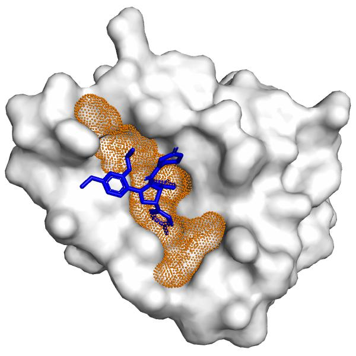
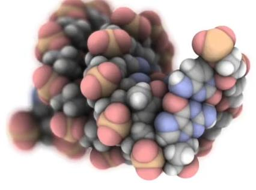
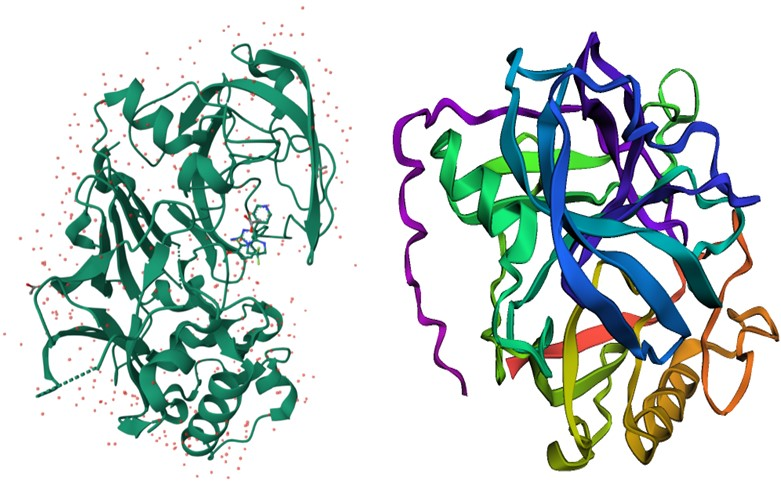
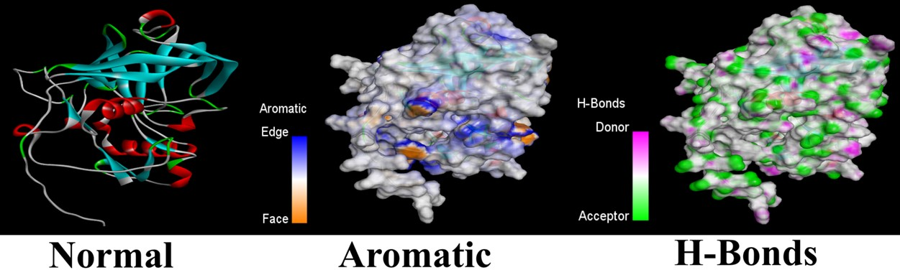
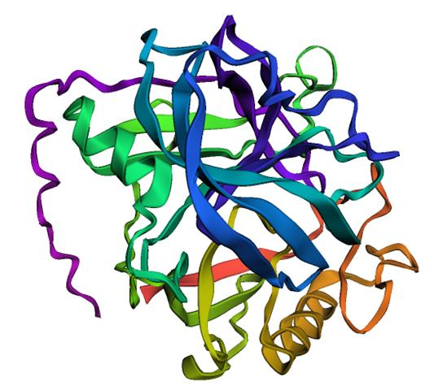

Molecular Research & Structural Analysis
BioSync's broader biomedical research direction also includes complementary molecular-analysis components such as BIOVIA, AlphaFold, AutoDock, and Vina. This is a complementary research component, separate from the VQC/QNN/QSVM disease-classification work described later on this page.

Protein Structure
Predicted 3D macromolecular fold rendered as a rainbow cartoon ribbon diagram, highlighting secondary structural motifs and domain organization.

Binding Pocket
Solvent-accessible surface mesh revealing the steric cavity and catalytic binding pocket accommodating small-molecule inhibitor poses.

Molecular Representation
Full atomistic space-filling CPK model illustrating van der Waals envelope, electrostatic contours, and molecular volume topology.

Structural Comparison
Side-by-side structural superposition comparing experimental crystallographic coordinates against computational folding conformations.

Interaction Analysis
Multi-panel contact mapping elucidating hydrogen bonds, pi-pi aromatic stacking, and hydrophobic contacts stabilizing the protein-ligand complex.

Extra Structural View
High-resolution structural view of the active site microenvironment detailing critical side-chain orientations and binding pose geometry.
PDB ID: 1YKR Target Analysis
Inspect structural fold comparison with experimental reference and pLDDT score (89.07).
Jump to 1YKR Simulation →PDB ID: 4KD1 Docking Matrix
Inspect multi-tool docking affinity benchmarks across 10 synthesized ligands with pLDDT score (91.56).
Jump to 4KD1 Simulation →